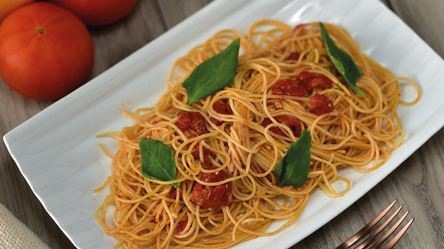

Pasta en salsa de Tomate

Descripcion
Los espaguetis en salsa de tomate son excelentes acompañantes de múltiples platillos. Su versatilidad hace que los podamos disfrutar solos o con diferentes guarniciones. En Maxi Palí, te compartimos como preparar de manera, fácil, rápida y económica esta delicia de platillo que no puede faltar en la mesa. Si no cuentas con espaguetis puedes utilizar otro tipo de pasta.
La receta de espagueti con salsa de tomate es la más popular; parece como si los espagueti y el tomate frito estuvieran hechos el uno para el otro. He probado de mil formas esta receta. Asi que daré una básica y añadiré comentarios y variaciones que pueden hacerse. Si mal no recuerdo estos son los espagueti a la napolitana...
Ingredientes:
- 400 gramos de Espagueti
- 2 diente de ajo
- ½ cebolla
- Sal y pimienta al gusto
- aceite
- 3 tomates maduros
- 1 ramita de laurel
- Una cucharada de orégano
Preparacion:
- En una olla hervir 2 litros de agua y agregar: un diente de ajo , un cuarto de cebolla, los espaguetis, sal y pimienta al gusto. Por aproximadamente 15 minutos.
- En otra olla, colocar los tomates y hervir por 10 minutos. Una vez hervidos licuar junto con la cebolla, sal y pimienta.
- Una vez hervido los espaguetis y lista la salsa de tomate, en un cacerola colocar una chucharada de aceite y sofreír con un diente de ajo finamente picado, luego agregar la salsa de tomate, una cucharadita de orégano y una ramita de laurel. Dejar hervir por 10 minutos. Luego agregar los espaguetis y dejar hervir por 5 minutos más.